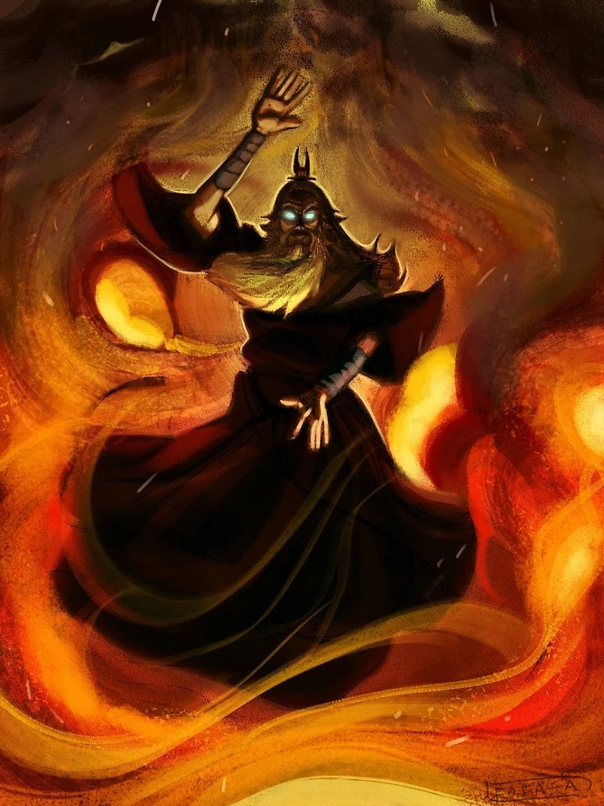

Gyermekkora
Roku, Aang elődje, a Tűz Nemzetében született több mint egy évszázaddal Aang előtt. Gyerekkorát a Tűz Nemzeti Királyság egyik nemesi családjában töltötte, így már fiatalon megismerte a fegyelem, a tisztelet és az erő értékét. Bár nemes származása biztosította számára a kényelmet és a kiváltságokat, Roku életének hamar irányt szabott, hogy kiderült, ő az Avatar, aki a világ egyensúlyának megőrzésére hivatott.
Fiatalon szoros barátságot kötött Sozin herceggel, aki később a Tűz Nemzet ambiciózus uralkodója lett. Gyerekkorukban Sozin és Roku testvéries kapcsolatot ápoltak, gyakran edzettek együtt, és osztoztak a jövőről szóló álmaikon. Ez a barátság mélyen befolyásolta Roku későbbi életét, hiszen a közös múlt ellenére később szembe kellett szállnia barátjával, amikor Sozin hódító tervei veszélyeztették a világ egyensúlyát.
Avatar mivolta miatt Roku fiatalon kezdte meg képzését a négy elem mestereként. A Tűz Nemzet falujában töltött gyermekkora alatt nemcsak a tűzidomítás alapjait sajátította el, hanem a felelősség érzését is, amely az Avatar szerepével együtt járt. Ekkor még nem volt teljesen tudatában annak, hogy élete milyen kihívásokat tartogat számára, de a tűzidomítás iránti tehetsége és barátaival való szoros kapcsolata megadta számára azt az alapot, amelyre későbbi fejlődése épült. Roku gyermekkora így nemcsak boldog és kiváltságos időszak volt, hanem az Avatar-szerep súlyos felelősségeire való felkészülés kezdete is.
Élete és halála

Roku élete során elkötelezetten dolgozott a világ egyensúlyának fenntartásán, a nemzetek közötti béke biztosításán és az Avatar-szerep méltó betöltésén. Miután mesterré vált mind a négy elemben, számos kihívással nézett szembe, beleértve természeti katasztrófákat, hatalmi konfliktusokat és spirituális problémákat. Roku különösen nagy figyelmet fordított a spirituális világ és a fizikai világ közötti kapcsolat fenntartására, gyakran közvetítőként szolgálva a szellemek és az emberek között.
Legfájóbb konfliktusa Sozin Tűz Uralkodóval volt, aki egykor legjobb barátja volt, de hódító ambíciói végül szembefordították őket egymással. Roku megpróbálta megakadályozni Sozint tervei végrehajtásában, de a barátságuk végül ellenségeskedéssé fajult. A vulkánkitörés során, amely Roku életének utolsó nagy megpróbáltatása volt, Sozin megtehette volna, hogy segít neki, de szándékosan magára hagyta, hogy megszabaduljon az Avatartól. Roku így Sozin árulása miatt halt meg, ami utat nyitott a Tűz Nemzet százéves háborújának.
Aangal való kapcsolata
Roku és Aang kapcsolata az Avatar-ciklus különleges kötődésén alapult, amely lehetővé tette, hogy az előző Avatárok szelleme tanácsokkal lássa el az aktuális reinkarnációt. Roku szelleme Aang egyik legfontosabb mentora és vezetője volt, különösen a Tűz Nemzet elleni harcban, mivel Roku saját tapasztalatai révén értékes tanulságokat tudott megosztani Aanggal.
Roku segítette Aangot abban, hogy megértse az Avatar szerepének összetettségét és az ehhez kapcsolódó felelősségeket. Tanácsaival felkészítette Aangot arra, hogy ne csak idomítók vezetője legyen, hanem a világ spirituális egyensúlyának megőrzője is. Roku gyakran emlékeztette Aangot arra, hogy az Avatar feladata néha nehéz döntéseket igényel, és néha a barátságot vagy érzelmi kötelékeket is háttérbe kell szorítani a nagyobb jó érdekében.
Különösen fontos szerepe volt abban, hogy Aang megértse Sozin és az ő történetét, amely figyelmeztetésként szolgált Aang számára, hogy időben cselekedjen a világot fenyegető veszélyekkel szemben. Roku megosztotta Aanggal saját kudarcának történetét – hogy nem lépett fel időben Sozin ellen –, ami Aangot arra sarkallta, hogy bátran szembenézzen Ozai Tűz Királlyal.
Roku és Aang kapcsolata azonban nem volt teljesen mentes a feszültségektől. Roku gyakran azt tanácsolta, hogy Aang tegyen meg mindent, még ha az szembemegy saját pacifista elveivel is, például hogy győzze le Ozait akár az élete árán. Aang viszont kitartott amellett, hogy megoldást találjon az ellensége legyőzésére anélkül, hogy megölné. Bár nézeteik különböztek, Roku tanításai és példája erőt adtak Aangnak, hogy az Avatar szerepét a saját értékrendje szerint töltse be.
Roku útmutatásai és Aang fejlődése közötti kapcsolat nemcsak egy tanító-tanítvány viszony volt, hanem mély spirituális kapocs is, amely segített Aangnak felismerni, hogyan kerülhet harmóniába saját képességeivel és az Avatar örökségével. Roku bölcsessége és tapasztalatai végigkísérték Aang útját, jelentős hatást gyakorolva mind az ő döntéseire, mind a világ jövőjére.